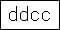
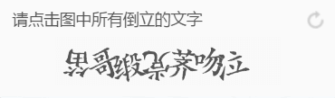
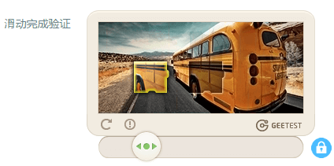
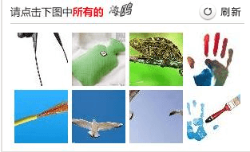
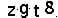
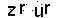

本文内容：
简单的验证码比如如下：
- 
百度的
当然也有比较不一样的验证码：
如知乎时让我们点击倒立的文字
- 
比如geetest的滑动验证
- 
比如12306的被人吐槽的变态验证码：
- 
验证码的作用
验证码是一种较为粗暴的人机判别方式，通过识别提交的验证码是否正确来判断是否是正常的用户，而非机器。
那么有什么用呢？正常来说，对于一个WEB应用，正常的用户会按照操作的流程来使用功能。而总有一些“刁民” 会采用其他的方法，比如直接用程序来模拟自己的行为来得到某些便利。如：选课的时候进行刷课，看看有没有剩余，有的话就选上，毕竟一直盯着费时费力；还有刷票，比如春运 。还有恶意的用户通过枚举密码来暴力破解其它用户的密码……
而有了验证码之后呢？你必须要能够准确的识别出验证码才能实现你的目的。比如你要用程序以枚举的方式暴力破解别人的 ，要是你的程序识别不出验证码，那么你就无法完成这项工作。
验证码主要原理
验证码是如何实现的呢？
首先，可以生成随机的字符串,然后保持在session中，然后通过各种绘图方式将文字输出到图片上（可以假如扭曲、变形、旋转等干扰）。用户提交时，服务器端验证用户提交的验证码是否和session中一致，若不一致返回验证码错误。此外，可能用到AJAX进行验证码更新（如点击换个验证码）
简单的验证码破解
国科大教务处现在也有验证码了!
老实说，上面那个说刷课啥的就是我 (→_→) 现在有了验证码，登录不上去怎么办！
下面以UCAS的教务处的密码为例，来介绍用OCR识别的方式来识别验证码。
UCAS的验证码
UCAS的验证码如下：
看上去挺简单的~
经过观察发现，貌似只有小写和数字，然后看验证码2连两个r都长一样，说明其干扰其实挺弱的，就那么几种。
我们直接用OCR（Optical Character Recognition，光学字符识别）即可，比如google的tesseract-OCR
安装ocr
windows下安装：http://digi.bib.uni-mannheim.de/tesseract/tesseract-ocr-setup-3.05.00dev.exe
- 安装时候勾选 Registry settings
- 安装后重起
Linux://github.com/tesseract-ocr/tesseract/wiki
使用
其使用方式简单，命令行为：
- tesseract a.png result
上述命令生成了result.txt文件，文件中为识别的结果
要在屏幕中直接输出呢？
- tesseract a.png stdout
python代码
只需要几行即可
1 | def image_to_string(img): |
上述的代码使用了subprocess来调用tesseract，并获取返回结果。
由于tesseract-OCR识别可能有非字母非数字的（比如空格），我们用正则表达式去除，然后最后小写并返回。
提高识别率
上面简单的调用可能有的处理不是很好，如上面的第一个例子识别为zgta，我们希望能去除背景等来让整个验证码更加的干净，以便于识别。
于是先进行预处理，将其小于某个阈值的设为0，大于阈值的设为255,然后二值化，此外，把四周的黑框去除了。
这里使用了python的装饰器（这是一种添加新功能很好的设计模式）:
1 | import os |
现在我们可以正确的第一个样例啦。
处理后效果如下:
- 
- 
测试识别率
为了能更好的测试，于是使用如下的代码下载200张图，然后进行人工标注
1 | def download_verification_code(save_name): |
测试代码如下：
1 | import os |
可以看出有预处理的提升了不少。
小结
上面我们偷懒使用tesseract-OCR，得到了33%左右的正确率。
其实可以通过简单的训练应该就可以很好的正确率，因为标注的时候发现很多字母或者数字是长一样的。
PS: 登录脚本的话可以进行优化，比如识别的需要4个字母或者数字，如果不是就重新获取验证码，这样能减少服务器说验证码错误的次数。
目前登录成功一次平均需要2.6次的尝试，还算可以。
其它